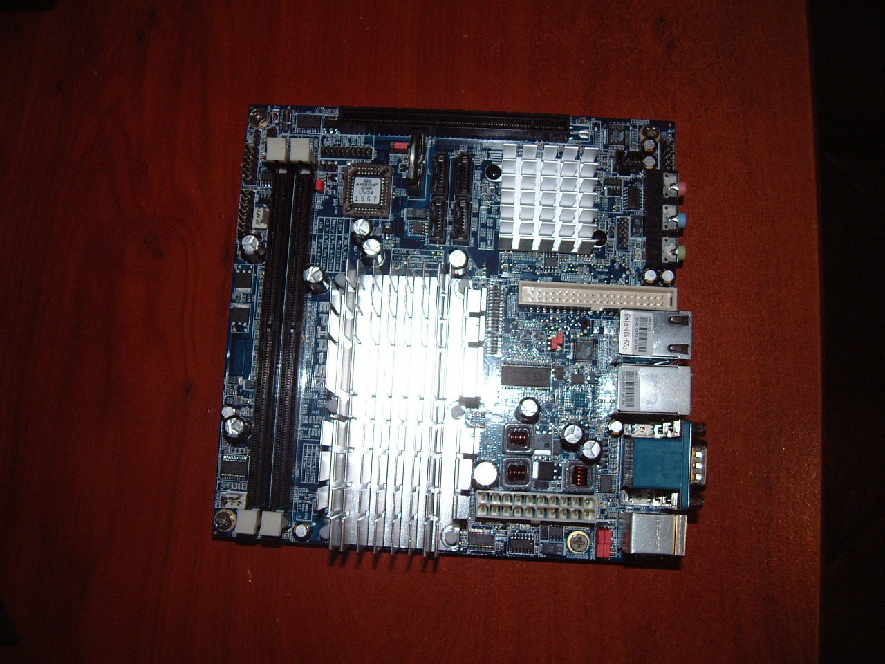

Montando un servidor de bajo consumo

Después de que mi viejo pentium III empezase a desfallecer y dar problemas, me puse a pensar en que tendría que empezar a sustituirlo por uno nuevo.
Después de buscar por internet que comprar para montar mi servidor, me decidí por un ordenador de bajo consumo y sin ventiladores.
Al final me decidí por una via epia modelo sn-10000 que no trae ventiladores y que consume a pleno rendimiento 25w.
Alguna de las características por las que me decidí por este modelo y no otro de via epia fueron:
- No trae ventiladores
- usa memoria DDR2 y admite 4gb de ram
- Trae un puerto minipci y otro pci express.
- Lector de memoria compact flash integrado en placa
- Dejo unas fotos que saque cuando me llego la placa.